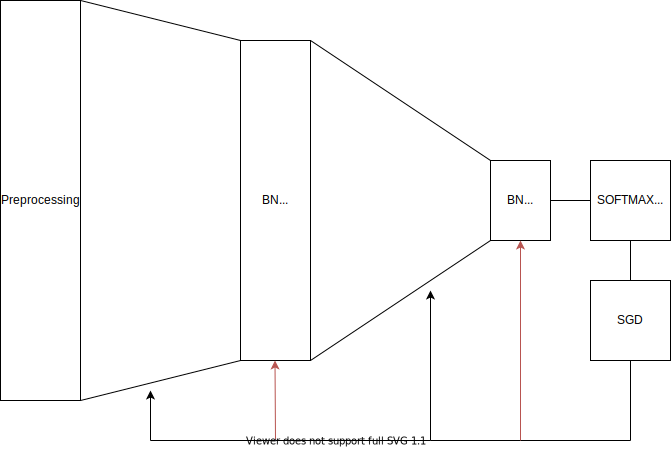
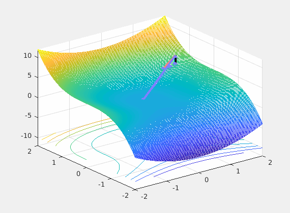
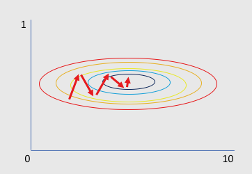
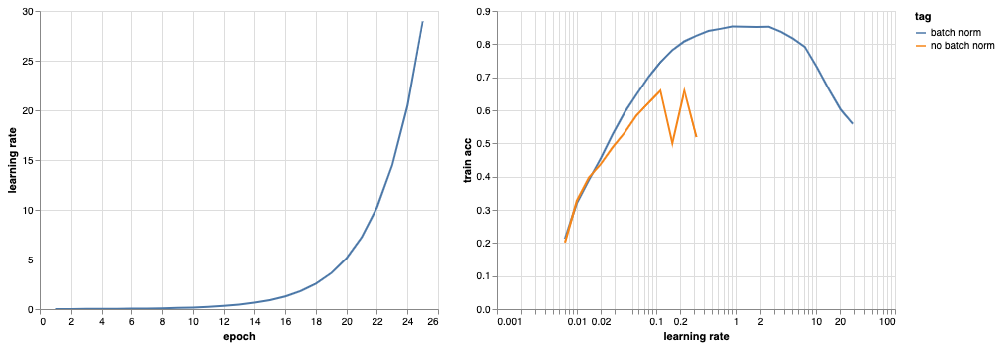

Batch Normalization
Contents
Batch Normalization¶
Why whitening helps¶
The input¶
It is instructive to see the training process as a control system.
 Control System view of training
The system takes input \(\mathbf x\) and produces a loss that is used to update the parameters \(\mathbf w\) for each of the layers based on a estimate of how much the loss \(L\) changed for that input. There are multiple concepts in this sentence that is worth highlighting. First lets repeat the SGD equation below as it will used to drive the discussion.
It is enough to discuss the limiting case with just two parameters to visualize the loss as shown below. This is obviously a 3D plot with x and y axes on parameters and the z axis assigned to loss.
 Optimizer Visualization (from here)
Recall that back-propagation starts from where forward propagation ends, so the input is the driving force of the learning process and the noisy negative gradient of the loss with respect to weights is a search direction of where to look for significant reductions of that loss. The control system’s optimizer feedbacks the parameter updates every mini-batch hopping that successive updates will converge to some good local minimum.
As described in this paper, networks learn the fastest from the most unexpected examples. If this rings the bells of entropy in your ears it should. One way to maximize the unexpectedness is in each iteration to choose input examples that belong to different classes expecting that they will also contain significantly different information. In practice we can approximate this with a permutation over the examples (epochs).
So what we do at the input is important and as you can see from even this very limiting case, the loss surface \(L(\mathbf w) = L(\hat y, y) = L(\sigma(w^Tx), y)\) over all possible weights is very much changing at each iteration (mini-batch). So if we are stuck in a bad local minima at iteration \(k\) chances are in the next iteration \(k+1\) we wont as the loss surface may not have a local minima there. In summary permuting the inputs brings a very positive net benefit to training as we break correlations in time.
Normalization and Scaling¶
We also have seen that whitening the input to a neural network manages to change the input distribution significantly and in this section we would like to connect this to learning efficiency. Starting from the operation of normalization let us consider a limiting example of two parameters as shown below.

Contour of the loss with respect to two parameters
In this contour plot of the loss, the SGD path as it tries to find the minimum has lots of problems. The trajectory shown is not smooth which means that the algorithm converges very slowly. The reason is that there is a much larger dynamic range in the x-axis and this means that the gradient (a vector) with respect to one of the parameters will dominate its direction creating a zig-zag pattern.
The different scales at the parameter space are a manifestation of different scales at the input space since the function tries to combine the input with weights. As shown in the backpropagation exercise with the neuron, the gradient of the neuron output with respect to the weight is proportional to the input \(x\) and the proportionality factor can be very small if the dot product is either very large or too small. In the case where all inputs are positive (as in the figure above), the changes to the weights are all of the same sign across parameters. The best way to correct the situation is to normalize the input data around a mean of 0 and this will result into a much faster SGD convergence. After normalization you can get a more rounded (bivariate in this case) distribution where gradient directions can be diverse.
In summary both scaling and normalization can lead to beneficial for training time and convergence results.
Weight Initialization¶
In addition to the input the initial values of the weights play an important role in learning efficiency and convergence. The role of the initializers is however not so critical in the presence of batch normalization but it is worth visiting as it provides some intuition as to what batch normalization solves. Continue to the two run the two notebooks in the corresponding workshop section.
Batch Normalization¶
A recently developed technique by Ioffe and Szegedy called Batch Normalization alleviates a lot of headaches with properly initializing neural networks by explicitly forcing the activations throughout a network to take on a unit gaussian distribution at the beginning of the training. The core observation is that this is possible because normalization is a simple differentiable operation. In the implementation, applying this technique usually amounts to insert the BatchNorm layer immediately after fully connected layers (or convolutional layers), and before activations.
In practice networks that use Batch Normalization are significantly more robust to bad initialization. Additionally, batch normalization can be interpreted as doing preprocessing at every layer of the network, but integrated into the network itself in a differentiable manner.
The effects of BN is reflected clearly in the distribution of the gradients for the same set of parameters as shown below.
 Histograms over the gradients at initialization for (midpoint) layer 55 of a network with BN (left) and
without (right). For the unnormalized network, the gradients are distributed with heavy tails, whereas for the normalized networks the gradients are concentrated around the mean.
Histograms over the gradients at initialization for (midpoint) layer 55 of a network with BN (left) and
without (right). For the unnormalized network, the gradients are distributed with heavy tails, whereas for the normalized networks the gradients are concentrated around the mean.
 BN allows us to learn much faster and operate efficiently at deeper architectures compared to without
Consider running this excellent notebook together with this paper.